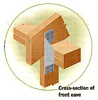

Backyard Shed
Finally, an easy-to-follow set of shed directions that anyone can use.
By John Vivian
August/September 1993
Summer's getting long in the tooth; rain is scarce and leaves are beginning to show color. The family vacation is over (if not paid for) ,the garden is tending itself, the fish have quit biting and pro football hasn't yet kicked off. Weekends drag, it's time to find something to get you out of the house. What better project than building a shed to store your gear?
In just such circumstances some years back, I responded to a magazine ad for a plan set that promised a pretty shed "anyone could build." But the plan proved to be nothing but a single sheet of paper with a crude drawing, a materials list written in shorthand, and instructions that began "Anchor sole plate..." What's a sole plate? Don't ask me, the plan didn't say.
Professional Help
As luck would have it, our little country town took up recycling that year and I got to carry boards for a carpenter as he built us an open-fronted recycling shed. I still have a mind's-eye picture of him with his deliberate but steady pace, measuring twice, cutting once and then setting nails with a whack. Thus instructed, I built a scaled-down version of the recycling shed, closed in the front, and made a woodplank door and sliding window. You can use this shed to store garden tools or wood, to garage your lawn tractor and attachments, to house a few goats, sheep or chickens, or for a combination of uses. (Just be sure to put a dust-proof partition between the laying hens and your work or storage area.)
The shed is a few inches short of 16' long, 8' high and deep. It's designed for mistake-proof construction, using economical, standard-size materials. But it is made to last, with ground-facing floor beams of pressure-treated (PT) lumber to resist decay and insect damage, and a frame more closely spaced than you'll find in many new homes. The siding is T-1-11 plywood, which is weather-proofed and grooved on one side to simulate barn boards.
With careful shopping, all new materials should cost less than $600 (at 1993 prices). Finish it to match your house with prehung doors, windows, and clapboards or shingles, and the cost can more than double. But if you shop wisely, use recycled lumber, and build your own doors and windows, the cost can be less than what you spend for seed and soil conditioners each year.
You'll find these directions detailed enough to complete the shed, even if you barely know a hammer from a saw. Construction entails a lot of "tacking" (temporary fastening with fasteners sunk part way) to eliminate errors. I've even included tips on compensating for the type of amateur-builder mistakes I've made myself.
Planning
Locate the shed where it'll be most accessible for use. Mine is midway between house and garden and convenient to the driveway, as we use it to store a canoe and bicycles as well as the tiller and wheelbarrow.
A small shed needn't be built from the brand new, kiln-dried, defect-free materials that building codes require for dwellings. Boards need only be strong, sound and uniform. (Don't build any one component-a wall, roof or floor-of mixed sizes and species.) Look at several lumberyards, building-supply recyclers, sawmills and even nearby demolition dumps (which may contain remains of torn-down buildings). All lumberyards have cut-price sales, and recyclers have surplus as well as used materials at a fraction of the price for new. Look in the Yellow Pages under "Building Materials-Used" and "Lumber-Retail." Look around, local mills may not have a phone. Whatever the source, reject boards with major knots or cracks. Look down the long side of each edge and discard any with serious warps or twists.
Prehung exterior doors and windows are quickest to install but are expensive. Freestanding glazed sashes don't cost much and can be fixed in place or hinged from any edge. You can hang any freestanding, solid-wood door in a box of 1" boards attached flat to wall framing, but avoid the hollow doors used in new-home interiors. Their thin skins can be pierced by a good bump from a loaded garden cart and they aren't weatherproof. Cheaper is to build and hang a plank door. Then rig an old window sash or scrap plywood-shutter to slide in wood channels fastened to the outside of the wall.
Measure Lumber and Complete Plan
Go to your lumber supplier and measure the materials you plan to use (a "nominal" 2 x 4 x 8 stud is 8' long but actually only 1 1/2" thick and 3 1/2" wide). Before you buy a board, draw up a detailed "actual" measure plan, using a scale ruler or square-ruled graph paper.
The following are simplified terms, materials and orientation for framing members. Rot-resistant PT 2 x 6s are used for the floor-framing members. The sill rests atop the foundation to hold floor beams or joists, placed 24" apart. The walls and roof are framed with 2 x 4s. They're laid flat around the edge of the floor to make up the sole plate or sleeper. The sleeper supports vertical 2 x 4 wall studs, which are placed 12" apart, extending up to the plate at top. This plate supports the 12"-spaced 2 x 4 roof beams, or rafters. Two by-fours are doubled at the end rafters in order to make corner supporting beams, and also around windows and doors.
Flat boards can sag and buckle, so framing members are placed with their stronger, narrow dimension facing the sheathing they support. Floors, roof and wall sheathing are standard 4' x 8' sheets of exterior-glued plywood or oriented-strand particleboard.
Modifications
You'll note that dimensions supplied are a bit short of the standard 8' lumber and plywood lengths that are specified in conventional shed plans. This means you must trim most frame members and sheet goods, which takes a little time. But, it also gives you room to compensate for mistakes and produces a shed with a pleasing roof overhang.
On paper, experiment with door and window locations. The shed is long and narrow, with a single door in one end wall and a double door on the front at the other end. This will give the most long-wall storage area. Put a big window beside the front door. Or you might want doors on the front and windows on the sides. Note: Detailed instructions for hanging the doors and windows of this shed will appear in the upcoming issue, No. 140.
Design your shed's frame around the placement and "rough cutouts" for doors and windows. Openings should be a bit larger (all around) than the box frame of prehung units or the margins of freestanding, prebuilt windows or doors, plus twice the thickness of door-frame boards. The opening for a single door should be at least 33" wide to admit the tiller. Double doors can open 60" or so for the lawn tractor or to let you come and go with arm loads of tomato stakes. Live with the shed on paper for an imaginary season; you may even make scale cutouts of your wheeled equipment to make sure it will fit.
Properly anchored in a mortared-block foundation, your shed will be a permanent structure. So, take your plan to the regional building inspector and local zoning boards to find out restrictions of size, appearance, materials and structural design. Also find out if your shed must be a certain distance from shared property lines and public ways. Follow the rules or you may be forced to tear your work down. Now, pick up your materials and get to work. Take your time and enjoy. Every hour or so, relax with a cool drink and quit for the day before you get too tired.
Foundation
This shed will be a work of art you can be proud of. Don't ask for a lopsided eyesore in a few years by plunking it directly on sod, on a pair of 4 x 4 timbers, or on concrete blocks sunk a few inches into the ground. If you've got money to spare, have a contractor install a poured concrete floor with footings around the perimeter; attach the frame to the anchor bolts he'll put in. Or use cylindrical Sonotubes to form poured concrete piers with molded-in anchor bolts. Easiest for an amateur is to build foundation piers of concrete blocks.
Clear and mow a level piece of ground at least 25' long and 12' deep and lay out stakes and crisscrossed string to locate the foundation. Along what will be the shed's back line, sink a pair of flatboard stakes 20' apart, with their wide sides facing one another. Run taut cord between them, tying foot-long loops at both ends so the cord can be adjusted and removed. Measuring carefully, set stakes to hold another line 7'4" in front of and parallel to the back line.
To lay out the side lines, sink a stake 2' to the rear and 2' in from one of the back stakes. Run line from it and across both front/back lines to another stake out in front. Use the framing square to make it perpendicular to the lines in place. Put in the other end line 15 1/2' from the first. Where lines cross will be the approximate outside corners of the foundation.
Place four concrete blocks inside the string rectangle with the long dimensions matching the long dimension of the building, outer corners at the "+" in the line. Place two more blocks at the midpoint of front and back lines. Mark holes 12" larger all around than the blocks. Then mark with ink where they cross, unloop them from one stake and coil out of the way.
The footing of a large building must extend below frost (at least 6' deep in the north). In most soils, a shed won't have meaningful frost-heaving problems if you sink the footing through topsoil and several inches into the subsoil.
Remove blocks and dig out sod and dark topsoil (add it to your compost). Remove lighter-colored subsoil to a depth that's an even multiple of a concrete block's 8" thickness: 16", 24", or 32" below surface of the highest ground under your foundation. Pour in 6" of gravel. Tamp well with a 2 x 4. Mark on tamper, measure against a length of string, and add or remove gravel as necessary to get all hole bottoms on a level plane (deeper up-slope).
Replace layout string. Use the line level to adjust strings on stakes so all are level and touching where they cross. Now square the layout lines. (Don't skip this step, and do rely on the plywood floor to square the building; you want foundation and floor perfectly square to one another.) Double-check that opposing lines are an even 15 1/2' and 7'4" apart all along. With a helper or more stakes, mark 3-4-5 triangles at each corner to assure that all are 90° right angles; that is, mark 6' from the "+" on a side line, and 8' on the adjoining front/back line. When the diagonal between them is precisely 10', the corner is a right angle. You can also use a long cord to assure the diagonal distance between crossed lines (between right rear and left front and vice versa) is equal. Move loops slightly on stakes or relocate stakes to get the corners at precise 90° angle and diagonals to measure the same-only then will your layout describe a perfect rectangle. Sink stakes plumb (vertical to the ground in both front-to-back and side-to-side dimensions) at the outside angle of the "+" that marks each corner.
Note: These directions will give you a shed that sits at ground level. The PT-lumber floor frame will resist rot and repel bugs even in moist weather. However, if you live in termite country or a damp climate, you may want to raise the shed for more airflow and better access. For a 12" crawl space, make the hole 4" deeper or shallower and add a tier or two of blocks to the foundation piers.
Setting Blocks
For each hole, combine half buckets of dry concrete mix with water (follow directions on sack). Dump a halfbucket of mixture onto tamped gravel in each hole, spread it out, and then set blocks in mix. Use a carpenters' level to assure that the outer edges are lined up inside the string boundaries. Use a length of wood to make sure all of the block tops are on the same plane below the string. Check to see that each block is plumb and level.
Combine dry mortar mix and water. Use a trowel to put mix 1/2" around edges and on the webs between open cells. Set in more blocks till all piers are above ground. Again, use the carpenter's level to make sure all sides of each block are lined up with string above and blocks below and that they are all plumb and level. Lay the top course with a thick bead of mortar, move level-string down to the lowest block, and do a final check to make sure blocks are level. Then remove the string and stakes. Let mortar set overnight and fill area around outside of blocks with tamped gravel or subsoil.
To keep moisture from moving from blocks to wood, center a 12" x 20" rectangle of roll-roofing atop blocks. Slit corners and bend 2" of roofing down over outer edges. To admit anchors, cut "X"s over cell holes of blocks. Note: Roll-roofing is 36' long, and you'll need two 16' lengths-totaling 32' out of each 36' roll-to cover the roof without seams. So, cut no more than a yard of roofing off the end of any one roll.
The Floor
Now position the sill (a rectangle of doubled PT 2 x 6s placed on edge atop the foundation). Nail it to prepunched anglesteel anchors held inside cells of concrete blocks with cement mix. Then, using metal hangers, fasten the floor joists between front and back sills and attach the flooring atop the joists. (Do not substitute 2 x 4s for the 2 x 6s.)
Select two pairs of PT 2 x 6s, and lay pairs flat and butted end-to-end atop front and back foundation blocks. Join pairs where ends meet over the middle foundation-piers; use hole-punched, metal trussplates and 8d galvanized, common nails. Trim ends so they extend beyond blocks by 1/4" (skirt board will overlap sill, leaving room for roofing bent down over blocks). Set sill boards on edge, so that ends and outer edges extend 1/4" beyond the side margins of front and rear foundation. Trim two 2 x 6s so that they fit between ends of the back/front sills. Place them so they will jut 1/4" over edge of foundation.
Center-join two more pairs of 2 x 6s and trim them to fit snugly between end boards, inside and flat against the outer front and back sills. Don't nail yet, but trim two 2 x 6s to fit between the inner end boards. Trim seven more 2 x 6s to the same length to serve as floor joists. Turn the inner back and front sill boards to lay flat and place them side by side atop piers so you can mark joist and stud locations on both at once. Find and mark the precise center. From center and out to each side, mark a line every 12" with pencil and try square. The final marks will be less than a foot from the ends.
Make a nailing template by tamping one joist hanger snugly to a length of scrap 2 x 6, out-flaring flanges of hanger even with the board's end. With hanger "U" at bottom of the 2 x 6, align midpoint of the narrow top edge of the board with the center and every other 12"-spaced mark to each side. Mark nail locations through holes in hanger flanges. Over nail-hole marks, tack hangers in place (so you can pull nails and adjust joist locations later if need be) by setting 8d galvanized common nails halfway into sill.
Lay outer sill boards flat atop foundation piers. Center inner boards flat atop them. Fasten inner to outer sill boards using two 8d galvanized common nails, one above the other, between joist hangers. Now, fit sill together squarely atop foundation; fasten ends with 12d nails.
If you have a 12-horsepower or smaller lawn tractor, nail on wood or metal X-braces every 2' between 2 x 6s under its parking spot. If tractor is larger, add 2 x 6s so they are spaced every 12 inches.
Anchors
Put two spikes through holes at bottom of prepunched angle-steel anchors. Poke down into corner blocks and fasten anchors to inside corner of sill with 8d nails. Mix a half bucket of leftover concrete or mortar per corner, and fill block cell containing foot of anchor with clean rock or rubble wedged in and spot-cemented. With a hacksaw, trim anchors so they're even with top of sill. Tap joists into hangers (ends butted tight to side of sill) till upper edge is even with top of sill. Fasten hanger to joists with 8d nails through holes in hanger brackets. (But, for now, leave joist hangers tacked only to sills.)
Use your try square to transfer "on-center" marks inside the sills to out-facing faces of front and back sills to use later in locating studs. Lay 2 1/2" plywood or 5/8" particleboard sheets with seam in the middle of the frame, front edges even with front sill, rear edges jutting beyond sill. Place the two remaining sheets. These should join to the middle sheets over midpoint of underlying joists (sides will jut beyond sill). Adjust joists and hangers if necessary so all seams are centered over a joist. Then lift flooring, one edge of one sheet at a time, and sink tacked on joist-hanger nails in sill. Don't forget this step, just flooring-over loose joist hangers.
Apply chalk to a 20' length of cord. Tighten and snap cord to make chalk lines where floor extends beyond sills. Trim flush to sills, using the circular saw and a fine-toothed plywood blade. Align chalk line with centers marked on outer front/back sills, tighten and snap cord to mark nail lines down middle of flooring.
Set 8d nails every 4" around the perimeter of flooring; alternate them 3/4" and 2 1/2" from the edge. Set nails 5/8" from edge of ply, staggering them from side to side every 3" down joints between sheets. Angle nails slightly in toward underlying joist. Set nails every 6" along chalk lines over joists. Now, your floor is on and anchored. Your back is no doubt aching from stoop labor-take a break.
Wall and Roof Frame
You can assemble front and back walls flat on the floor, using floor nail lines and mid-joist marks made on sill fronts as a stud-layout guide. (Snap chalk lines between marks to make it even easier.)
For sleeper (sole plate) at bottom and plate at top, trim two sets of flat, end-joined 2 x 4s to fit front and back perimeter of floor, and connect them with truss plates-just as you made the outer sills.
You want a standard 8' sheet of plywood to cover the entire front except for the bottom 4" or so of the sill (where you will attach the 6"-wide PT skirt board). So reduce studs by the combined thickness of sheet flooring, plus the thickness of 2 x 4 sleeper and plate, plus 2" (5 1/2" to 6" total). Trim nineteen 2 x 4 studs by this amount.
Now, lay out the front wall frame. Lay one joined pair of boards (that will be the sleeper) up on the edge along the front of floor. Every 12" (at marks on outside of sill) set studs on edge with one end butted to inside of sleeper. Double studs at both ends. Place another joined 2 x 4 flat to ends of joists at top as the plate. Be sure studs at 4' intervals from center are squarely "on center" of the mark at top and bottom; they'll be nailers for sheathing joints. Tack sleeper and plate to nailers and end studs with two 12d nails through flat board, and halfway into cut end of each stud.
To be sure plywood sheets meet over a nailing stud, lay four plywood or particleboard floor sheets squarely atop frame. Start with the two center sheets over the central stud. Adjust studs as needed. Final-fasten studs to sleeper and plate and remove ply. Next, frame door and window openings according to your plan. (Set prehung doors and windows in place on the floor and box them top and sides, in place and not too snugly, with doubled 2 x 4s laid on edge.)
Nail flat-board braces to front of frame at a diagonal at each lower corner. Then tack four evenly spaced short boards extending 6" above front edge of floor. These will catch the bottom of the wall frame when you raise it. At the middle of the outer face of each endstud, tack two long ground-brace boards. Their long ends should aim toward the back so they'll slide forward on the ground and hold the frame as you raise it.
With a helper(s), raise the frame. Set it squarely to the floor and hold it up by tacking the rear end of ground braces to side sills. Nail sleeper even with front edge of floor, two 12d nails between each stud. Use truss plates to connect end studs to sill.
The Back Wall
For the rear wall, cut 19 studs 1 1/2" shorter than those in the front wall (2' shorter in heavy snow country). Then build and fasten the rear wall frame just as you did the front. Now you must notch rafters to fit flat atop plates. Be sure opposing ends of wall frame are square and plumb. Take a 2 x 4 up on a ladder and set it on edge atop and square to ends of the plates, bottom rear corner extending 2" beyond the back edge of the rear plate. There should be a 3" to 4" overhang in front. With a level, make vertical lines on the rafter off top edges of plates. Leaving rafter on plate, use the level to draw horizontal lines describing wedges (when removed, these wedges will let rafter rest flat on plate). On ends of both rafters, use level to draw vertical cutoff lines, showing the small wedge that must be removed to make each end vertical.
Square wall frames at the other end and then see if marked rafter fits. If so, cut out wedges in the master rafter and use it to mark 18 more. If master rafter can't be made to fit the other end by loosening braces and pulling on the frame a little, mark another to fit. Then free-hand a board that's a compromise between the two. Notch two like that; force one wall in and the other out to fit.
Notch all rafters, and nail two together for each end. Fasten doubled-end rafters to front/back plates with 8d nails through narrowest part of front and rear notches; fasten with metal truss plates at sides. Top and bottom inside, put 8d nails at a 45° angle into plate. Place other rafters over wall studs and tack to plate with finishing nails sunk vertically and all the way in (so they won't interfere with fastening roof sheeting, but rafters can be removed easily if necessary).
Now, put in sidewall frames. Beginning at center of sidewall sleepers, place vertical 2 x 4s every 12" "on center" with narrow edge facing out and even with edges of sleeper and top plate.
You'll have to cut top ends to match the angle of the roof. To measure in place, center inner tip of 2 x 4s atop the on-center mark on sleeper and hold narrow edge against outside of end rafters (being sure that stud is perfectly plumb and square). Use outside bottom edge of rafter to mark angle of top cut. Saw this angle by adjusting the foot of your circular saw to 12.5°. Make several trial cuts to be sure angle is right.
Tack middle stud till you are sure sheathing joint meets squarely down its middle. But, final-fasten the rest top and bottom with small truss plates or by inserting 8d nails one inch from stud's cut end, and angling at about a 45° angle into sleeper or plate. To prevent splitting, drill a 1/16" pilot hole for each nail.
Siding
By now the leaves need raking, the pennant races are heating up, and you're anxious to finish the shed. Don't cut corners. Most of all, don't throw up wall ply and then teeter on a ladder while trying to trim it in place with a circular saw. The blade can kick back and throw you off the ladder. The studs are sheathed with T-1-11 plywood that can stain and rot prematurely from ground splash, so the bottom of the shed is trimmed with a skirt made from 3/5 x 6" PT decking lumber.
First, install sheathing to front wall. Beginning with two sheets meeting in a seam over the middle stud, tack on plywood-narrower ends up and textured side out. It is heavy and unwieldy stuff, but take the time to assure that bottom edges are level, that sides are square and that the splintery little lap joints meet over a stud. It should snug up against rafter bottoms and overlap sill by 2" or so.
On inside of ply, mark overrun at ends, as well as door and window openings. Mark bottom line of ply on face of sill. Remove ply, make cutouts and trim ends. Then, fasten 6"-side aluminum flashing with 3/4"-long, big-topped roofing nails every 6" all around sill (so lower edge extends 1 1/2" below bottom line of siding). Cut slits in lower 2" at corners. At door openings, make two cuts in flashing even with inner edges of jack stud, and bend the thin metal in.
Replace ply (over flashing), and final-fasten with 6d nails-first to center of top plate, then every 4" to alternating sides. Nail every 6" to studs in a line under midline of rafters, and finally nail to sleeper. Alternate angled nails every 2" along seams. Nail every 3" around cutouts.
Measure, trim and fasten side and back sheathing so bottom edges are horizontal and even with the front. Keep it square, and with seams over studs. You can mark the angled top cuts of side sheathing against upper edge of end rafters; measure carefully (at least twice) to get the backwall sheathing correct.
Along bottom of sheathing, bend flashing up and out at 90°. Fasten 5/4" x 6 x 8 PT skirt boards to sill with 8d nails. Upper edge of skirt should be under lip of flashing, and lower edge overlaps top of blocks and sandwiches edge of roll-roofing placed atop blocks. Bend exposed edge of sheathing down over skirt to form a drip edge.
Now, add doors and windows. Trim away flashing in door opening if building a flush door. For installing a prehung door, bend flashing in along floor edge and put a bead of caulk on front lip. Push box into rough opening till outer trim boards are tight against wall all around. Tap shim shingles between jack stud and box frame, using level to assure that frame is level and plumb. Carefully release door and adjust shims as needed till door swings freely and closes without binding. (Don't push shims in too far, as you can bow the frame and the door will stick.) Then, fasten box through shims to studs. For added door sill strength, cut a strip of PT skirting and fasten under lip of door sill.
The Roof
Tack lengths of any 1"-thick trim wood to front of rafters, so upper edge of trim boards is even with point of rafters. Take plywood or particleboard to roof, and adjust so that sheets are square to frame, edges are butted close down middle of a rafter, and front and back edges are even. Align lower front edge of roof with face of tacked-on trim, leaving extra roof to hang off back. A few inches will jut out.
Working on the ladder, tap rafters off plates, and get one centered under each joint in roof sheeting. Use your try square to make sure that each rafter is square to the plate. Final-fasten rafters to plates with "U"-shaped rafter brackets or universal joining brackets. Remove tacked-on trim from front of rafters.
Then go up on the roof. At joints, fasten roof sheeting to rafters every 2", alternating between sheets so two nails don't go in side by side (in other words, nails are set every 4" along the edge of any one sheet of plywood or particleboard).
Now, attach 1 x 6 trim to ends of the rafters in the front. Best is to nail on 1 x 6 x 16s, trimming one end. Or, nail on two 1 x 6 x 8s, being sure ends meet in the middle over a rafter end (fasten 2 x 4 nailing cleats to each side of rafter, long grain edge facing out).
Nail 6" trim to ends (and back as well if trim will be open to view); place so top of trim snugs up under roof ply. Later, for a more finished look, you can cut strips of scrap ply and fasten to underside of rafters at front and back. This will keep out nest-building phoebes (and bats and wasps if really tight); cut holes at the peak of side walls, and install screened aluminum vents over the holes to let out summer heat.
Roofing
Trim roof ply along sides and rear. Snap chalked-cord cut lines so the cut will be straight and even with trim (or sheathing). With roofing nails, fasten L-shaped aluminum drip molding along front, back and sides. Nail right through soft, thin metal. Trim ends with tin snips.
Roof with asphalt shingles or (at three times the price) wood shakes. For cheapest and easiest roofing, buy two-yard-wide, 36'-long "one-square" rolls of light-weight, mineral-covered asphalt roll-roofing. Do not use mere tar paper or roofing felt that will wrinkle as it absorbs rain water or tear and blow off in the first high wind). Get roofing in a dark color in the north, light in the south. If not using metal drip molding, edge front and back with butted wood shim-shingles extending 1/4" beyond edge of ply front and back. Lay a 6"-wide strip of scrap roofing alongside edges.
Take rolls to roof and orient so they'll unroll along long dimension of shed. Push one end exactly 2' beyond one side edge of roof. Unroll, keeping edge square to long edge of ply, and let sun-warm, if needed, to lie flat. Then, 23" from other edge of the roof, cut square with utility knife against a heavy straightedge.
From two rolls, you'll get four 16'-long, yard-wide strips, so you can overlap each strip by more than 1/3" of its width-a good practice on a low-slope roof. Install from lower eave to upper, with uncoated border at top and overlapping strips running across the wide dimension of the roof. Lay so that 1/2" of roofing extends beyond drip edge all around. Overlap strips so lower 23" is exposed "to weather." Turn the upper strip around so factory-cut coated edge is at top, extending 1/2" beyond edge of drip molding. Trim to 23" wide.
Cement and nail following directions for your particular roofing (that you'll find printed on the brown paper cover). Roof ply is thin and nails would punch through and twinkle on the shed ceiling. So, fasten upper margin of roofing (to be double covered) along rafters. Use a chalk line if need be to mark rafter locations. With trowel or caulking gun apply roofing cement along all edges and in narrow up-down strips every 2' along nail lines.
Finishing Touches
Trim corners with 1 x 4 boards cut to fit tightly between top trim and skirt board, using 6d galvanized finishing nails. Attach to side and then to front, so that front trim covers edge of side trim boards.
Build a ramp to get the tiller or tractor in. For each 6" of rise, cut a yard of long wedges made from scrap PT 2 x 6s (or set diminishing lengths atop one another in a stair-step pattern, angling the forward end of each). Arrange wedges 1' apart atop a level tamped-gravel base in front of the door and nail on scrap plywood. Fasten ends of wedges to sill with L brackets. Raw wood and plywood will discolor. Use a one-coat exterior sealer or stain in a shade that appeals to you.
Bill of Materials (cost new):
Foundation:
Twenty square-ended 8" x 16" concrete blocks
Three 80-pound sacks of concrete mix
Two sacks of dry mortar mix
Four 36" lengths of prepunched angle steel
Eight 10d spikes
Three cubic feet of clean gravel
Total: $50
Carpentry
Twenty no. 2 PT 2 x 6 x 8 sills/joists ($90)
One hundred thirty "economy" 2 x 4 x 8 studs ($130)
Four sheets 1/2" plywood or 5/8" particle-board subflooring ($40)
Twelve sheets 3/8" T-1-11 textured finish plywood ($100)
Six 5/4 x 6 x 8 square-edged PT decking ($12)
Four sheets 3/8" plywood or 1/2" particleboard roof ($40)
50' 6" aluminum flashing
6d, 8d, and 12d hot-dip galvanized common nails or deck screws, galvanized finishing nails. ($20 total)
Fourteen 2 x 6 joist hangers, four 2 x 6 truss plates, thirty 2 x 4 truss plates, thirty 2 x 4 rafter or all-purpose anchors ($40)
Total: $472
Roofing:
Two 90-pound rolls mineral-coated roll-roofing
One gallon roofing cement or a caulking gun and 10 tubes of cement
36' aluminum-drip molding
Roofing nails or power stapler and staples
Total: $50
Fini sh:
34' 1 x 6 rough pine, 70' plus 1 x 4 rough pine
Stain or paint to cover
Total: $60
Grand total: $632
Tools Needed
For measuring: a 16' steel tape-measure
For foundation work: one shovel or posthole digger; a ball of nonstretching hard cotton mason's cord; five 1 1/2' wood stakes; a line level; a hand or electric drill with a 1/16" wood-drilling bit; a large adjustable wrench; a soil-tamper (2 x 4 will do); a small cement mixer; a large bucket or sheet of old plywood; a hoe to mix concrete and mortar, water to mix it with, and a trowel to spread it.
For carpentry: a sturdy stepladder; a pair of 4'-wide, 30"-high sawhorses (make them from metal or plastic brackets and some old 2 x 4s); four straight 8' 2 x 4s and a sheet of 1/2" exterior-glued plywood to rest atop them to make a worktable; an electric circular saw with rough-cut plus good quality crosscut and plywood blades; an electric drill and 1/16" bit for drilling pilot holes plus a heavy-duty three-wire extension cord long enough to reach from house to shed (or rent a portable electric generator); chalk to make a snap line; a long (4' is best) carpenter's level; an "L"-shaped metal framing or roofing square; a small try square; a four-pound hammer; and a line-powered or 10- or 12-volt portable power-driver.
For roofing with asphalt roll-roofing: a heavy straightedge (a steel fence stake is best); a utility knife; a disposable trowel; a hacksaw to trim anchors; and tin snips for aluminum drip molding.
Editor's Note: Because of the extensive time and energy that goes into building this shed - and because you're probably painfully sunburned by now-we've decided to print the directions for installing doors and windows in our next issue. So enjoy a little R&R, and get ready to tackle stage two, the final stage, next month.
|
ILLUSTRATIONS BY LAURIE GRACE |
|
|
|
|
 |
|
|
 |
|
|